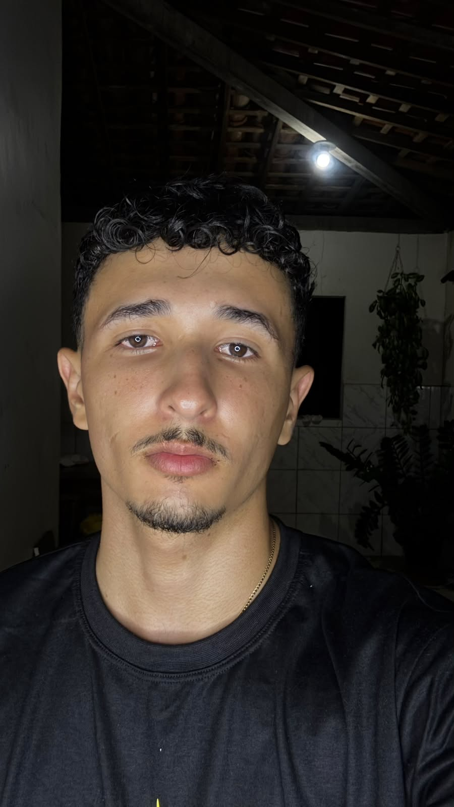

Inteligência artificial
EEVEE
Assistente de voz para Windows com memória por perfil e consulta a materiais de estudo.
Python · OpenAI · SQLite
Desenvolvedor de software
Desenvolvo aplicações web, APIs e assistentes de IA. Gosto de entender o que acontece entre uma boa interface e o código que a sustenta.
Seleção de trabalhos
Inteligência artificial
Assistente de voz para Windows com memória por perfil e consulta a materiais de estudo.
Back-end
Uma API que traduz ingredientes e receitas regionais brasileiras em dados nutricionais.
Automação
De vídeos longos a cortes verticais com transcrição, legendas e organização por etapa.
Protótipo de gerenciamento de produtos com operações CRUD e simulação de permissões para administrador e usuário.
Ver repositórioConsulta de alimentos e informações nutricionais pela API USDA, com exibição de calorias, proteínas, carboidratos e gorduras.
Ver repositórioDashboard de comunicação interna que reúne usuários, publicações e comentários a partir da API JSONPlaceholder.
Ver repositórioAplicação de terminal que usa Google Gemini e engenharia de prompts para responder a dilemas com diferentes personas filosóficas.
Ver repositórioDesign responsivo e interações acessíveis com HTML, CSS e JavaScript.
Ver repositório
Sobre mim
Sou Kaue de Oliveira, estudante de Ciência da Computação em Maceió. Desenvolvo aplicações que conectam interfaces, dados e serviços para resolver problemas concretos.
Na EEVEE, trabalho com a continuidade de uma conversa por voz. No Viral Cuts, exploro como o código pode ajudar na edição de vídeo. Esses projetos me levam a estudar como áudio, dados e interfaces funcionam juntos.
Baixar currículoTecnologias
HTML · CSS · JavaScript
Interfaces responsivas, acessibilidade e integração com APIs.
Python · FastAPI · Node.js · REST
APIs, regras de negócio e processamento em segundo plano.
PostgreSQL · SQLite · Docker
Persistência, organização dos dados e ambientes reproduzíveis.
OpenAI · Gemini · Whisper · FFmpeg
Voz, transcrição, integração com modelos e processamento de vídeo.
Git · GitHub
Versionamento e documentação das decisões de cada projeto.
Java · C++ · Estruturas de dados
Estudos da graduação em lógica, algoritmos e orientação a objetos.
Trajetória
Na UNIMA, estudo lógica, estruturas de dados e algoritmos. São a base para as decisões que tomo nos meus projetos.
Com o OliSnack, aplico regras de negócio em uma API. Com a EEVEE, integro voz, memória e ferramentas em um aplicativo para Windows.
Busco estágio e colaboração em projetos de desenvolvimento de software, com interesse especial em back-end e IA aplicada.
Contato
Para estágios, projetos e colaborações.
kauedeoliveira.dev@gmail.com